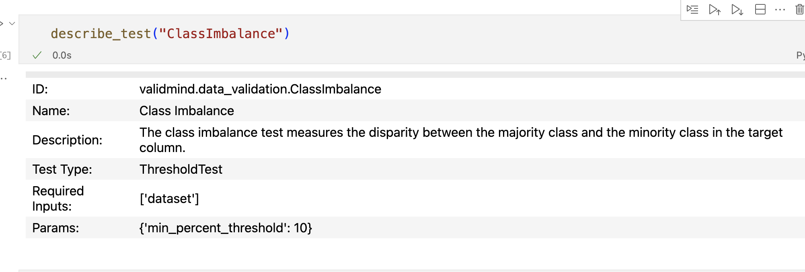
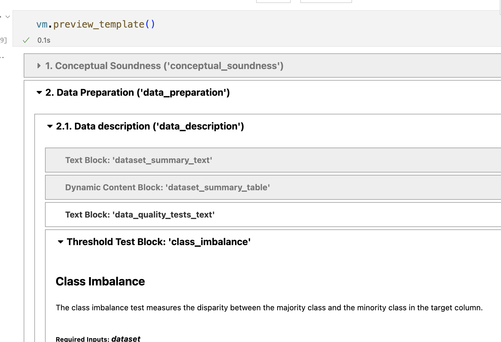
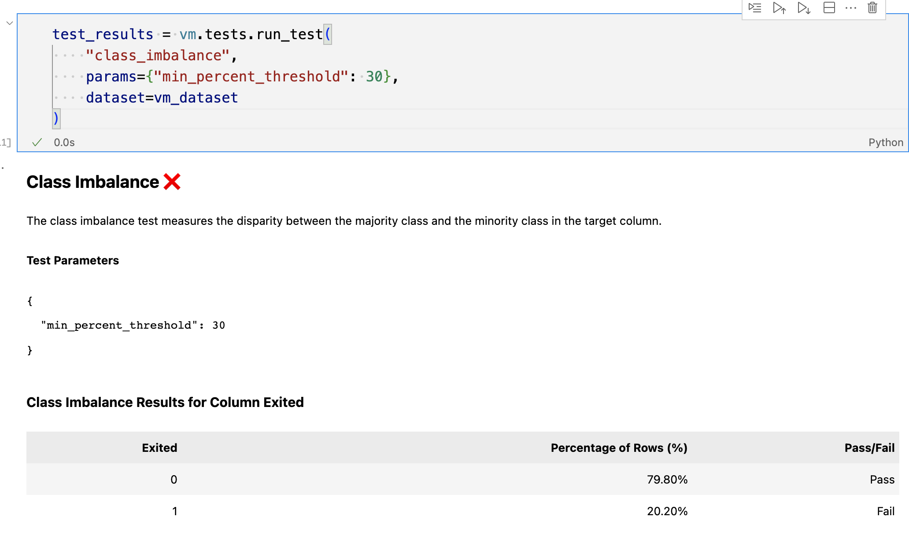
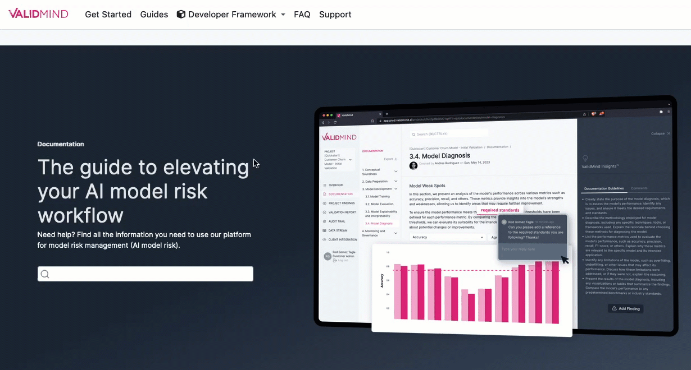

September 27, 2023
Release highlights
In this release, we’ve added support for large language models (LLMs) to enhance the capabilities of the ValidMind Developer Framework in preparation for the closed beta, along with a number of new demo notebooks that you can try out.
Other enhancements provide improvements for the developer experience and with our documentation site.
ValidMind Developer Framework (v1.19.0)
Large language model (LLM) support
We added initial support for large language models (LLMs) in ValidMind via the new FoundationModel class. You can now create an instance of a FoundationModel and specify predict_fn and a prompt, and pass that into any test suite, for example. The predict_fn must be defined by the user and implements the logic for calling the Foundation LLM, usually via the API.
To demonstrate the capabilities of LLM support, this release also includes new demo notebooks:
- Prompt validation demo notebook for LLMs. As a proof of concept, we added initial native prompt validation tests to the developer framework, including a notebook and simple template to test out these metrics on a sentiment analysis LLM model we built.
- Text summarization model demo notebook for LLMs. We added a new notebook in the developer framework that includes the financial news dataset, initializes a Hugging Face summarization model using the
init_modelinterface, implements relevant metrics for testing, and demonstrates how to run a text summarization metrics test suite for an LLM instructed as a financial news summarizer.
Support for Hugging Face models
ValidMind can now validate pre-trained models from the HuggingFace Hub, including any language model compatible with the HF transformers API.
To illustrate this new feature, we have included a financial news sentiment analysis demo that runs documentation tests for a Hugging Face model with text classification using the financial_phrasebank. Try it …
A better developer experience with run_test
We added a new run_test helper function that streamlines running tests for you. This function allows executing any individual test independent of a test suite or a documentation template. A one-line command can execute a test, making it easier to run tests with various parameters and options. For example:
run_test("ClassImbalance", dataset=dataset, params=params, send=True)We also updated the QuickStart notebook to have a consistent experience: Try it …
This notebook:
- Now runs
vm.preview_template()after initializing ValidMind - Now runs
vm.run_documentation_tests()instead of running a test suite that is not connected to the template
Example usage for run_test
Discover existing tests by calling list_tests() or describe_test():
list_tests():

describe_test():

View the tests associated with a documentation template by running preview_template():

Using the test ID, run a given test and pass in additional configuration parameters and inputs:
# No params
test_results = vm.tests.run_test(
"class_imbalance",
dataset=vm_dataset
)
# Custom params
test_results = vm.tests.run_test(
"class_imbalance",
params={"min_percent_threshold": 30},
dataset=vm_dataset
)Output: 
Send the results of the test to ValidMind by calling .log():
test_results.log()Enhancements
- Multi-class test improvements. We made a number of changes to metrics to improve the developer experience:
- A new
fail_fastargument can be passed torun_test_plan,run_test_suiteandrun_documentation_tests, used to fail and raise an exception on the first error encountered. This change is useful for debugging. ClassifierPerformancetest now determines if you are testing a binary or a multi-class model. When testing a multi-class model, we now report additional per-class, macro and weighted average metrics.- Fixed F1 score metric so it works correctly for binary and multi-class models.
- A new
- Added multi-class classification support. The developer framework now supports a multi-class version of some the existing metrics, such as confusion matrix, accuracy, precision, recall, and more. Also, the dataset and model interfaces now support dealing with multiple targets.
- Implemented classification model comparison metrics. Added a model performance comparison test for classification tasks. The test includes metrics such as accuracy, F1, precision, recall, and roc_auc score.
- Track additional test metadata. Added a
metadataproperty to every ValidMind test class. Themetadataproperty includes atask_typesfield and atagsfield which both serve to categorize the tests based on what data and model types they work with, what category of test they fall into, and more.
Filter tests by task type and tags. We added a new search feature to the
validmind.tests.list_testsfunction to allow for better test discoverability. Thelist_testsfunction in thetestsmodule now supports the following arguments:filter: If set, will match tests by ID, task_types or tags using a combination of substring and fuzzy string matching. Defaults toNone.task: If set, will further narrow matching tests (assumingfilterhas been passed) by exact matching thetaskto the test’stask_typemetadata. Defaults toNone.tags: If a list is passed, will again narrow the matched tests by exact matching on tags. Defaults toNone.
Documentation updates
User journey improvements. We enhanced the architecture and content of our external docs site to make the user journey more efficient for model developers and model validators who are new to our products:
- Reworked the “Get Started” section to include more conceptual information and an overview of the high-level workflows. Try it …
- Revised the “What is the ValidMind Developer Framework?” section to provide an end-to-end overview of the workflow that model developers should follow as they adopt the developer framework. Try it …
Docs site improvements. We made a number of incremental improvements to our user guide:
New dropdown for the developer framework that gives faster access to the most important bits, such as our code samples and the reference documentation.

Publication date for each page that reflects the last time the source file was touched.
Previous and next topic footers** for related topics that make it easier to keep reading.
Expanded overview for key ValidMind concepts with some additional information.
Lighter background for diagrams that improves legibility.
How to upgrade
To access the latest version of the ValidMind Platform UI, reload your browser tab.
To upgrade the ValidMind Developer Framework:
Using JupyterHub: Reload your browser tab and re-run the
%pip install --upgrade validmindcell.In your own developer environment: Restart your notebook and re-run:
%pip install validmind